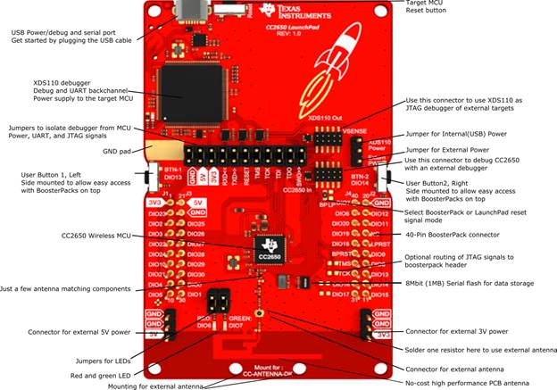

Meet the LAUNCHXL-CC2650 Launchpad!

Thanks for choosing the CC2650 wireless microcontroller and the LaunchPad ecosystem. LAUNCHXL-CC2650 is great for:
- Wireless IoT applications utilizing the world-wide 2.4 GHz frequency band for communication using Bluetooth Smart, IEEE 802.15.4 or proprietary protocols
- Easy-to-use development platform suited to both beginners and experienced embedded software developers, providing excellent access to all I/Os and other features of the CC2650
- Pairs up with a wide varitety of BoosterPacks for easy prototyping, or with other LaunchPads as a wireless network processor BoosterPack
- Battery-operated applications thanks to the ultra-low power consumption
Getting Started
Communicate wirelessly right out of the box
The LAUNCHXL-CC2650 is pre-programmed with software that allows wireless communication with smartphones and tablets over Bluetooth Smart. Simply connect the LAUNCHXL-CC2650 to a computer or USB power supply using the included USB cable, and download the Simplelink Starter app from the App Store or Google Play. This app lets you control the LEDs, see the state of the buttons, send data to the UART and control the I/O signals on the LaunchPad headers.

Going one step further, control can also be run through the Cloud by using the Cloud view link in the app.
Documents
Quick Start Guide: http://www.ti.com/lit/pdf/swru451
Link to CC2640 Bluetooth Low Energy Software Developer’s Guide, http://www.ti.com/lit/pdf/swru393
CC2650 Launch Pad User’s Guide
Board Contents
The LAUNCHXL-CC2650 consists of the CC2650 with application circuit, Red and Green LEDs, two buttons, a serial flash, the BoosterPack connectors that can be used to connect BoosterPacks for additional functionality and an XDS110 debugger, which can be used to program and debug the CC2650 on the Launchpad, or another board through the external target connector.

Figure 1 CC2650 LaunchPad (to be updated)
Power on
When power is applied by connecting the USB plug on the board to either a computer or USB power supply using the supplied USB cable, the board will run a power-on self-test, which primarily tests the serial flash. If the self-test is successful, the green LED will blink five times in rapid succession. If the test fails for any reason, the red LED will blink. After completing initialization, the green LED will blink every second as long as the device is advertising.
Power supply requirements:
The LaunchPad is designed to be powered from a USB-compliant power source, either a USB charger or a computer. When used this way, jumpers need to be mounted on the 3V3 position of the central jumper block. An LDO powered from the USB VBUS supply supplies 3.3V to the XDS debugger, the CC2650, and associated circuitry including the 3V3-marked pins for BoosterPacks.
Temperature range:
The LaunchPad is designed for operation -25 to +70 C. Note that other BoosterPacks and LaunchPads may have different temperature ranges, and when combined, the combination will be set by the most restrictive combined range.
Operation
As mentioned in the Power On section, once the LaunchPad has booted, it will perform BLE advertising. When the LaunchPad is in this state, it can be connected with the SimpleLink LaunchPad Starter app running on either iOS or Android. Once the connection is made, the SimpleLink LaunchPad Starter app can be used to control the GPIOs on the LaunchPad as well as read the status of the buttons.
Important note:
The text in this document pertains to LAUNCHXL-CC2650 revision 1.2 and later. For earlier revisions, there are some exceptions:
- Revision 1.1 PCBs are not able to support over-the-air updates with the firmware programmed from the factory. Either download updated firmware from http://software-dl.ti.com/lprf/launchpad/CC2650LaunchPad_BLE_All_v0_90.hex, and use SmartRF Flash Programmer 2 to download it to the LaunchPad
- Revision 1.1 works somewhat differently from 1.2 and later, described later. Revision 1.1 does not have level-shifters between the XDS110 section and the CC2650, so it is not possible to operate the XDS110 and CC2650 on different voltages. Revision 1.1 therefore does not have the VSENSE power selection jumper block mentioned later, and it only has a single External Target debugging socket, which can be used if you want to use the LaunchPad to debug an external target. In all other aspects, the different revisions work identically.
Jumper block
The jumper block in the middle of the board can be used to disconnect the upper section (XDS110 debugger) from the bottom section (CC2650). The jumpers are mounted by default. If you want to debug the CC2650 from an external debugger, you need to remove all the jumpers and connect the debugger to the socket marked CC2650 In.
It is also possible to use the LaunchPad to debug external targets. In this case, remove all the jumpers and connect the external target to the socket marked XDS110 Out.
The jumper block marked VSENSE can be used to select the source of power to the CC2650. Usually, power is supplied from USB and a jumper is mounted in the position marked XDS110 power (factory default). If you want to power CC2650 from an external supply, move the jumper to the position marked Extern. Pwr, and connect the external supply to the 3V3 pin on J1. Also make sure to remove the 3V3 jumper from the main jumper block. Make sure that the voltage applied stays within the supply range of the CC2650.